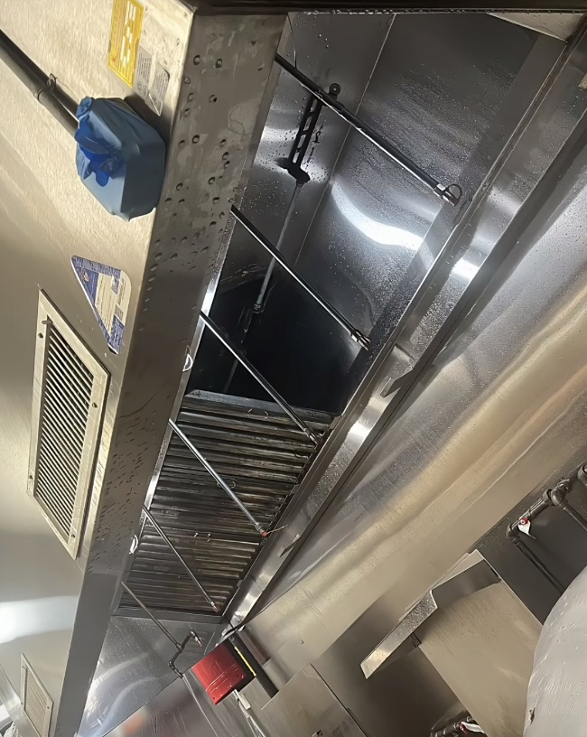
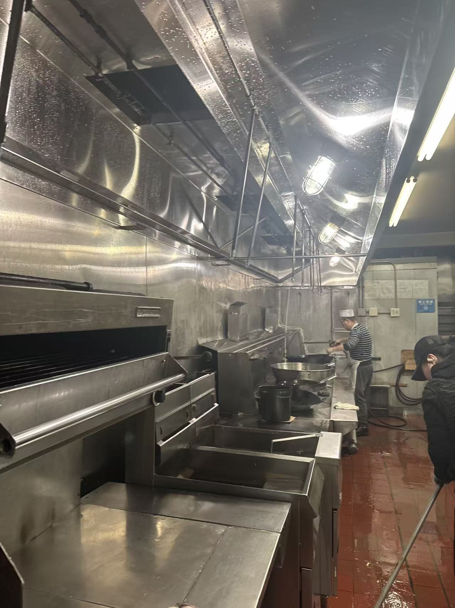
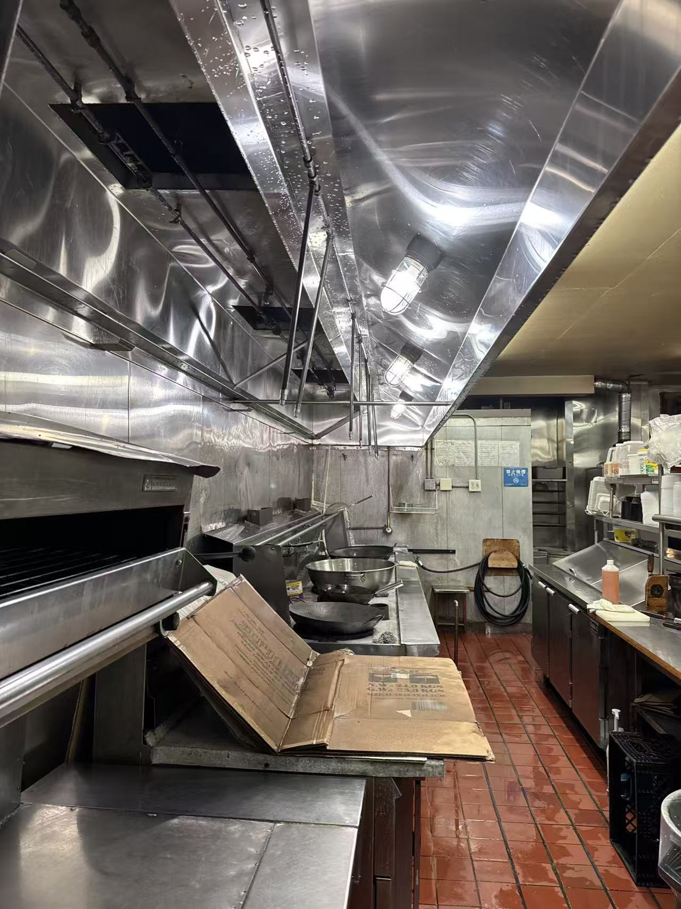

纽约专业餐馆洗炉头服务
餐馆专业洗炉头清洁公司 (Best Commercial Hood Cleaning)
拥有10多年餐馆炉头高温清洗经验
长期服务纽约及周边地区各类中餐馆、西餐厅、外卖店、面包店 Deli 及商业厨房。
公司持有纽约消防局（FDNY）认证 License，以及纽约长岛 Nassau County 认证防伪贴纸。
提供专业商用厨房排烟系统清洁服务，炉头清洗、油烟罩清洁、排风管道除油、蘑菇头与蜗牛风机深度清
公司拥有百万商业保险，全面保障客户权益，让您无后顾之忧。
为什么消防局规定三个月要洗炉头 或者检查？
餐馆厨房在每次使用烹饪设备时，都会产生大量油污和油烟。这些油脂会随着高温上升，并逐渐沉积在排烟系统内部。随着时间推移，
油污会不断堆积在油烟罩、过滤网、排风管道以及排风机内部。
当油污长期积累时，不仅会造成严重的火灾隐患和通风问题，还会增加卫生检查不合格以及餐馆被迫停业整改的风险。
因此，定期进行专业清洁和维护至关重要。
我们 Best Commercial Hood Cleaning，提供专业的餐馆厨房油烟罩清洁服务，在油污演变成安全隐患或合规问题之前，彻底清除系统内部积油。
我们的服务注重深度清洁、规范记录以及排烟系统的长期稳定运行，帮助餐馆更加安全、高效、安心地运营。



服务范围
合作伙伴
为什么选择我们帮你洗炉头？
纽约➕长岛执照 （FDNY）认证
10➕几年经验
最强热水高压机器
多个车队 快速预约
百万商业保险
According to NYC Fire Code, commercial kitchen exhaust systems should be cleaned regularly to reduce grease buildup and fire hazards.